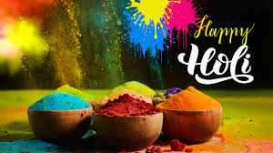
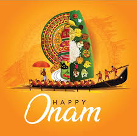

Festivals in India
Some major festivals celebrated in India are Onam,Diwali,Holi etc.The festivals can be national or religious. some national festivals are Independance day,republic day,Gandhi jayanti etc.the national festivals are celebrated together as a nation.
DIWALI
Diwali, also called Deepavali or Deepawali, is the Hindu festival of lights, with variations celebrated in other Indian religions such as Jainism and Sikhism. It symbolises the spiritual victory of Dharma over Adharma, light over darkness, good over evil, and knowledge over ignorance.

HOLI
Holi is a major Hindu festival celebrated as the Festival of Colours, Love and Spring. It celebrates the eternal and divine love of the deities Radha and Krishna. Additionally, the day signifies the triumph of good over evil, as it commemorates the victory of Vishnu as Narasimha over Hiranyakashipu.

ONAM
Onam is an annual harvest and cultural festival celebrated mostly by the people of Kerala and is traditionally associated with the legend of the benevolent Asura King Mahabali, who once ruled Kerala, returning each year to visit his people.
